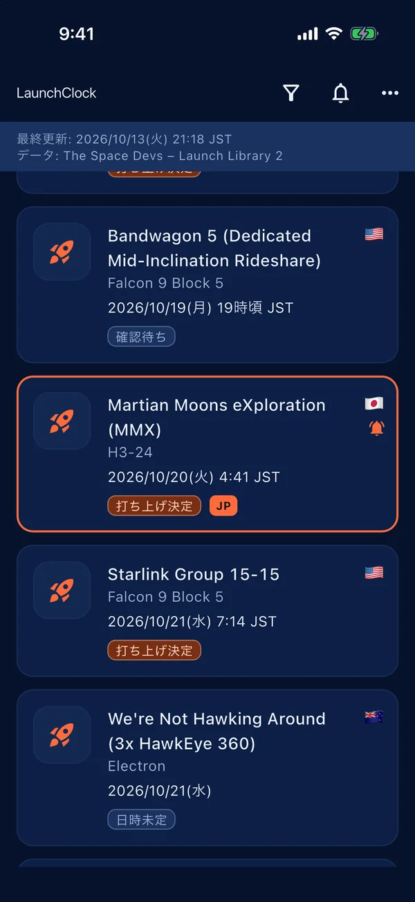
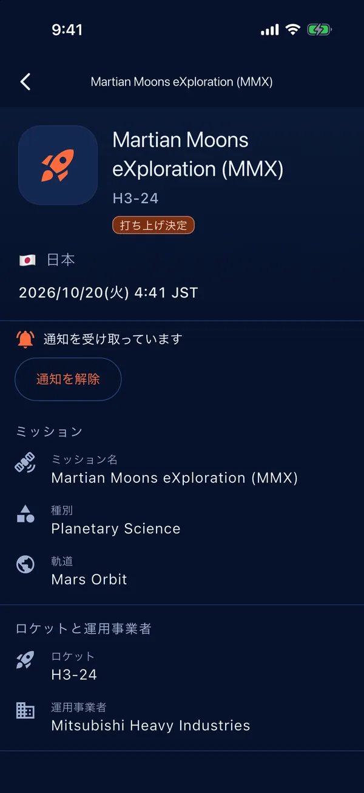
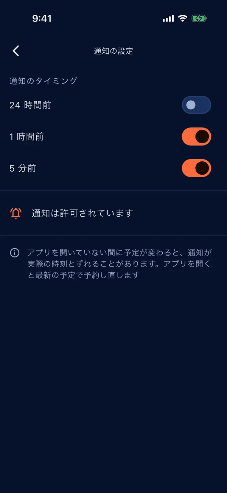
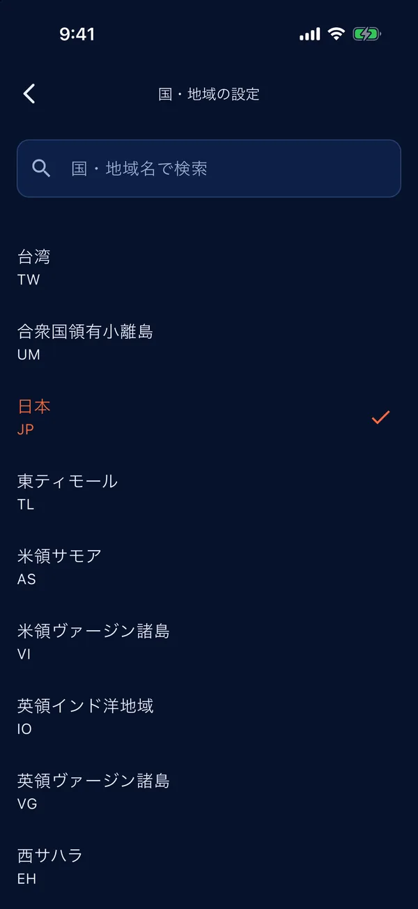

世界中の打ち上げを現地時間で
各国の打ち上げ予定を、お使いのタイムゾーンの時刻で確認できます。
ロケット打ち上げ予定
LaunchClockは、世界各地のロケット打ち上げの予定を一覧にして、現地時間で表示します。自分の国・地域の打ち上げは目立つように表示され、打ち上げ前の通知も受け取れます。
各国の打ち上げ予定を、お使いのタイムゾーンの時刻で確認できます。
国・地域を選ぶと、その国・地域の打ち上げが一覧で目立ちます。
気になる打ち上げに通知を登録すると、打ち上げ前にお知らせします。タイミングは設定できます。
端末の言語に合わせて日本語または英語で表示します。広告もアカウントもありません。
一覧・詳細・通知の設定・国と地域の選択の画面です。表示されている打ち上げは撮影時点の予定です。




ご質問・不具合のご報告・ご意見は次のアドレスまでお寄せください: info@kamkam.me
通知は端末内で予約されます。Androidでは、通知を時刻どおりに届けるために「アラームとリマインダー」(正確なアラーム)の許可が必要です。許可がないと通知が遅れることがあります。端末の「設定」でアプリからLaunchClockを開き、「アラームとリマインダー」を許可してください。あわせて、LaunchClockの通知が許可されていること、バッテリーセーバーなどでアプリが制限されていないことも確認してください。
打ち上げ時刻は予定であり、天候・機体の点検・射場の都合などで変更(延期)されることがよくあります。アプリを開くと最新の予定を取得し、登録済みの通知も最新の予定で予約し直します。気になる打ち上げの直前には、アプリを開いて確認してください。
打ち上げのデータは The Space Devs(Launch Library 2)から提供されています。アプリが参照するデータは約15分ごとに更新され、アプリを開いたときに取得します。正確性は保証されません。
収集しません。プライバシーポリシーをご覧ください。
打ち上げのデータは The Space Devs / Launch Library 2 から提供されています。正確性は保証されず、予定はいつでも変更されることがあります。国名のデータはUnicode CLDRによります。LaunchClockは、The Space Devs、宇宙機関、打ち上げ事業者とは関係ありません。